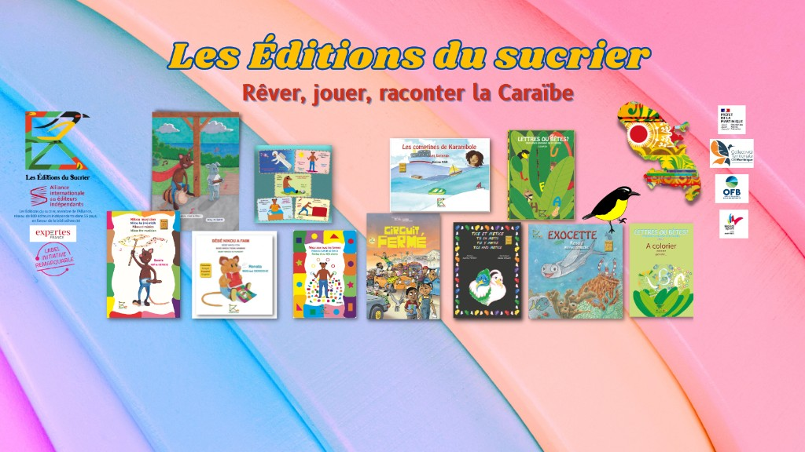

Chapitre 1 · À propos
La Maison d'édition
Une maison martiniquaise indépendante qui fait rayonner les récits caribéens auprès des tout-petits, des enfants et des équipes éducatives — en Martinique, en métropole et au-delà.

Notre histoire
Les Éditions du Sucrier naissent en 2018 à Fort-de-France, portées par Renée-Laure Zou — Renata — pour consacrer une maison entière à la littérature jeunesse ancrée dans la Caraïbe.
Le parcours de la fondatrice nourrit chaque titre : enseignante à l'Éducation nationale, déléguée pédagogique pour Hachette Éducation, puis autrice-illustratrice dès 2011 avec Nikou le manicou (trois albums aux Éditions Orphie). Depuis 2022, l'illustrateur Wilfried Deroche donne une nouvelle vie graphique à l'univers Nikou, avec justesse et humour.
La maison accueille aussi des voix haïtiennes, chypriotes et caribéennes (Alice et Jacob, Tice et Métice, Exocette…) et collabore ponctuellement avec d'autres éditeurs en relecture, correction, traduction et création littéraire.
Ce qui nous guide
Une ligne éditoriale exigeante, joyeuse et utile — à la maison comme à l'école.
Imaginaire caribéen
Langues du quotidien (français, créole, espagnol, anglais selon les ouvrages), paysages antillais, transmission culturelle et fierté d'appartenance.
Lecture plaisir & exigence
Albums illustrés, cahiers d'activités, BD jeunesse et déclinaisons (posters, stickers, coloriages) — chaque projet soigne le texte comme l'image.
Engagements citoyens
Mer et biodiversité, handicap abordé avec tendresse, nutrition, sport, diversité culturelle — souvent en partenariat avec des institutions (OFB, Parc naturel marin, Handisport…).
Nos univers de lecture Des héros attachants pour grandir avec les enfants — découvrez leurs histoires sur le site.
Familles
Des histoires à partager à la maison, en plusieurs langues sur de nombreux titres, pour le plaisir de lire ensemble.
Écoles & médiathèques
Fiches pédagogiques téléchargeables pour les comptes professionnels, ouvrages alignés sur les programmes de maternelle et cycle 2, interventions en classe sur demande.
Créer un compte professionnel →Partenaires
Salons, librairies, collectivités : nous construisons des collaborations durables en Martinique et à l'international.
Nos partenaires →Reconnaissances
Titulaire du label Initiative Remarquable et membre de l'Alliance internationale des éditeurs indépendants (réseau de plus de 800 maisons dans 55 pays). Nos productions s'appuient sur des partenariats institutionnels en Martinique — Préfecture, Collectivité territoriale, Office français de la biodiversité, Parc naturel marin de Martinique.